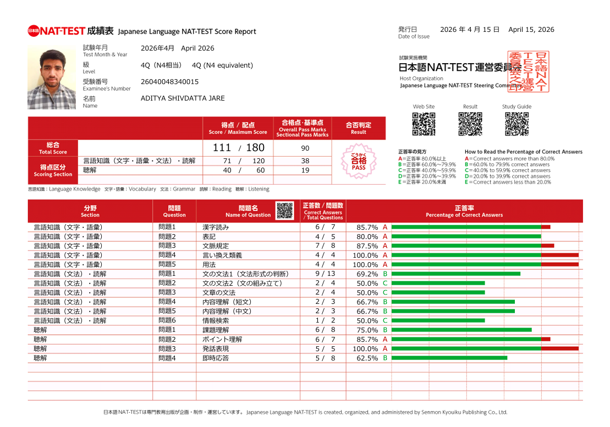

Level 4Q (N4 Equivalent)
April 15, 2026
Japanese Language NAT-TEST (Level 4Q)
Japanese Language NAT-TEST Steering Committee
ID: 26040048340015 • 合格 PASS (111/180)
Language Knowledge: 71/120
Listening: 40/60
Total: 111/180 (Pass)
Official Score Report for Aditya Shivdatta Jare. Passed 4Q (N4 equivalent) test with strong scores across Language Knowledge and Listening comprehension.